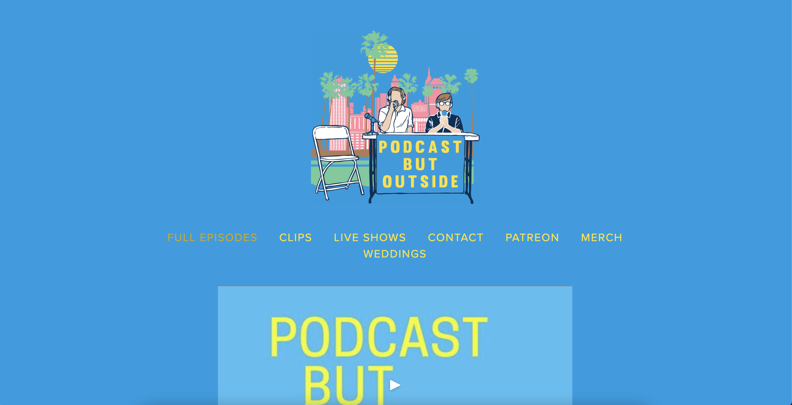
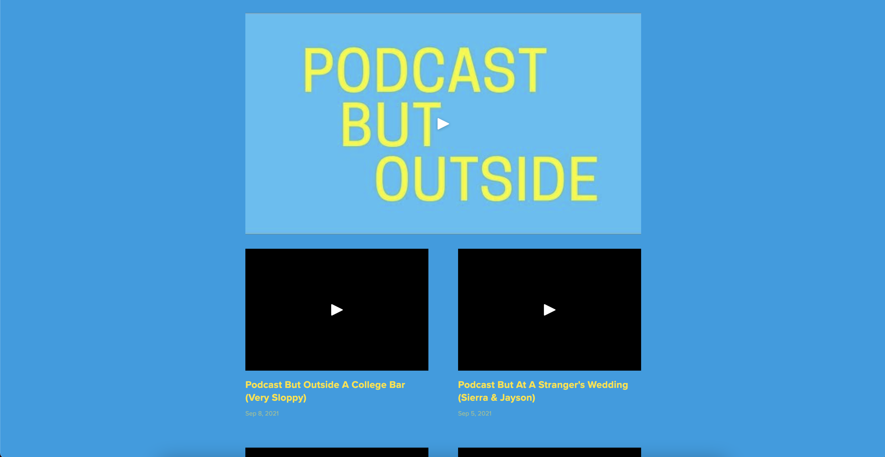
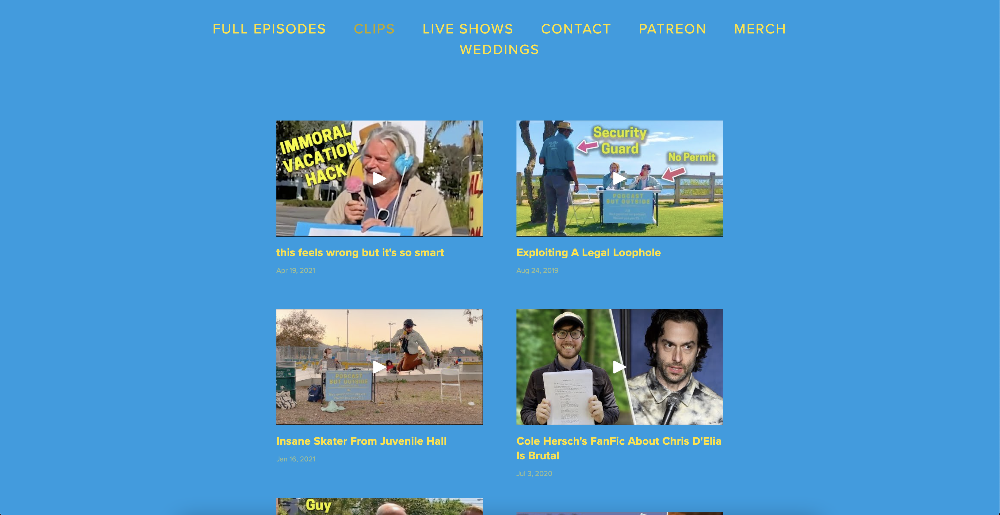
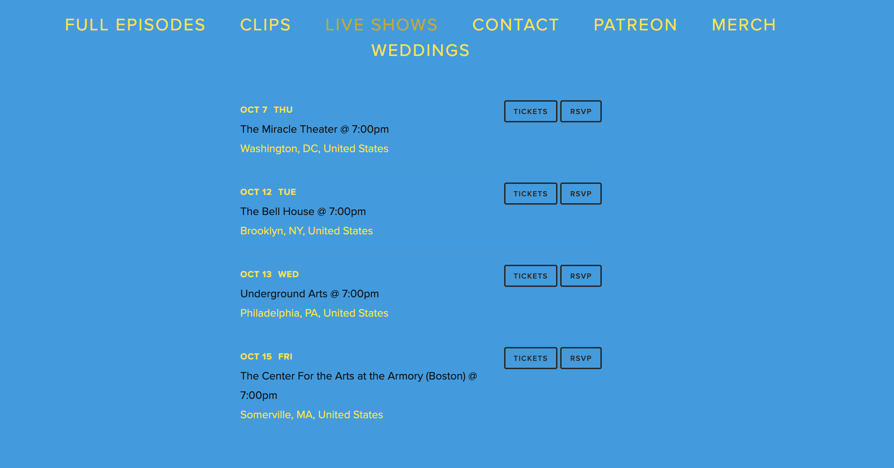

Podcast But Outside
2021 | ui design
Interface Redesign
Intro
Podcast But Outside (PBO) is a comedy podcast hosted by Cole Hersch and Andrew Michaan, combining a man-on-the-street interview style with deadpan humor. Both hosts have backgrounds in comedy writing, standup, and social media fame.
My website redesign embraces the offbeat quirkiness of the podcast’s brand, welcoming the audience with hand-drawn elements and playful themes.
Original Website
   Background
One benefit of the existing site is its simplicity. Text is kept to a minimum, and there’s no visual mess competing for attention on the screen. In my redesign, I wanted to keep this simplicity but add more on-brand humor to the site’s interface. My challenge was maintaining a balance of efficiency and delightful design. Too much focus on efficiency would detract from the design, and too much focus on design would distract the user from navigating the site.
I created a user profile to represent the Podcast But Outside’s target demographic. The profile is based on an overview of fans who interact with the podcast on social media and on the episodes.
Social media marketing is important to this demographic, so I wanted to make sure the social icons were more accessible in my redesign. Most fans are either millennials or part of Gen Z, so these digital natives expect websites to be engaging and upfront with content.
Wireframes & Ideation
When creating my wireframes, I focused on creating a strong visual hierarchy with headers and a varied scaling of elements. I created three variations for each page: home, live shows, and episodes.
01. HOME
For the home page, I wanted to visually represent the “outside” element of the podcast with the hosts standing in front of an outdoor background. Originally, I wanted to have a slideshow of multiple outside images loop behind the hosts. However, I chose to keep the static clouds background because it was less distracting. I also included cloud graphics in the navigation bar to create cohesion with the motifs.
02. LIVE SHOWS
The live shows page lists upcoming tour dates and links fans to a ticket purchasing site. Instead of a traditional list view, I wanted to use graphic representations of tickets with the information listed on each ticket. I also thought of organizing tour dates by region, since buyers are looking for venues closest to them.
03. EPISODES
For the episodes page, I experimented with ways of breaking the barriers of the grid layout. I brainstormed ways to organize the large video collection without overwhelming the user with endless scrolling.
Final Result
In my redesign of the Podcast But Outside website, I aimed to strengthen the brand voice with engaging graphics and playful design choices.
One way I was able to accomplish this was skewing images throughout the pages of the website. This created dynamic angles and a sense of movement in the design. Especially in the video gallery, skewing the shapes created more interest in the grid system that would otherwise appear stagnant.
I also revised the navigation bar by reducing the number of pages on the website and organizing them according to user feedback. The navigation bar also has a separate background color, ensuring visual separation from other elements on the page.
To increase engagement, I included cloud doodles that appear on hover and on active pages. There are also hand-drawn graphics throughout the site that create cohesion and reference PBO’s comedic reputation.
By improving the color palette, introducing a stronger visual hierarchy, and revising the navigation bar, the site can withhold a young, exciting brand and encourage the audience to engage with the podcast.